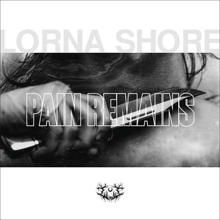

Escucha nuestra música
Si buscas una experiencia sonora intensa y envolvente, no te puedes perder la música de Lorna Shore. Con una combinación única de brutalidad y técnica, cada miembro de la banda aporta algo especial a nuestro sonido. Desde los guturales impactantes de Will hasta los riffs poderosos de Adam, pasando por la batería implacable de Austin y las profundas líneas de bajo de Andrew, te garantizamos que quedarás atrapado en nuestra música desde la primera nota. ¡Dale play y descubre por qué estamos marcando la diferencia en el metal extremo!

Compra el album | Compartir